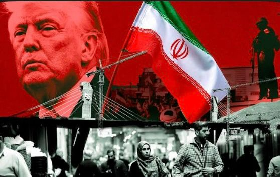

The Middle East continues to experience rising tensions as conflicts involving countries such as Iran, Israel, and neighboring regions develop. Recent reports indicate increased military activity, diplomatic efforts for ceasefire, and growing concern from the international community. Global leaders are calling for peaceful negotiations to prevent further escalation, while humanitarian organizations warn about the impact on civilians. The situation remains complex, with ongoing discussions aimed at restoring stability in the region.

Continue reading from trusted sources:
Read on aljazeera (Middle East News)Listen to background news audio:
🔴 BREAKING: Middle East tensions escalate | Iran and regional forces on alert | Diplomatic talks ongoing | Civilians affected by conflict | Global leaders urge peace